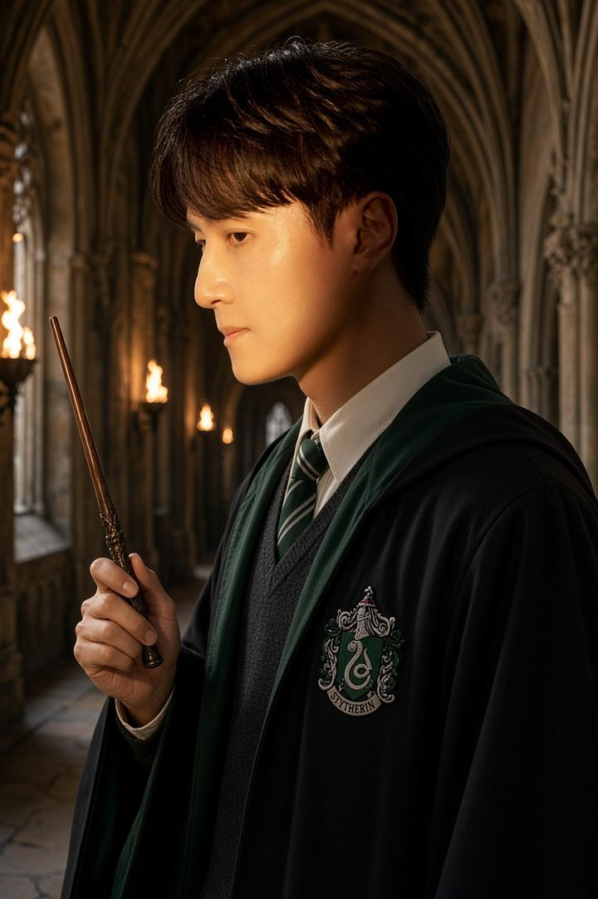
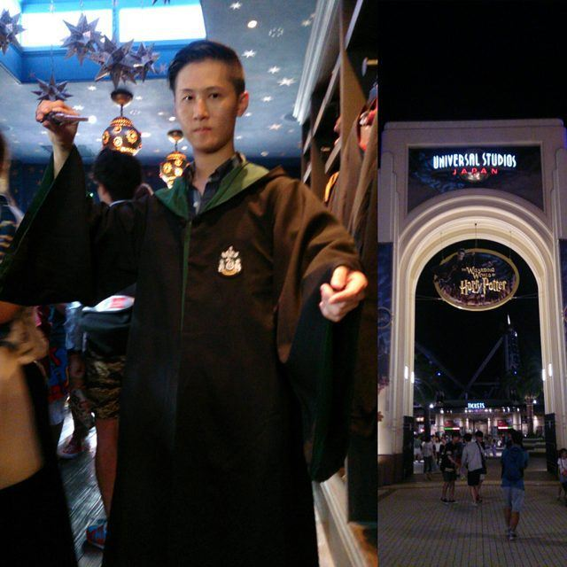

艙房A 生活隨筆 · 2026-10-18 12:10 UTC+8
我「 倒戈 」了：十幾年前就莫名喜歡的史萊哲林學院，其實是一種價值觀的投射 🐍
最近網路上有好多波哈利波特的二創微電影，主角是「 馬份大小姐（Miss Malfoy）」。
如果二創看太多，改編版在我心中都快變成「 正版 」了，其實有點緊張跟心跳加速（誤）😹
看著看著我也手癢，用 AI 拿自己實拍的照片，穿上史萊哲林學院的長袍。

十多年前我自己一個人，去日本東京跟大阪獨旅11天，在大阪環球影城，我最後就決定買這件綠色袍子。

當時說不上原因，只是對這個「電影中的反派學院」不討厭，反而非常好奇。
這次回頭透過AI問答拆解，我才注意到自己的三件事：
1️⃣ 色彩與性格：深綠💚＋黑🖤
色彩心理學常把綠色聯想到穩定、成長與安全感，這也稍微解釋為什麼我這麼喜歡深綠。
黑色則通常代表界線、克制與專業感（這是跟文化有關的聯想，不是絕對）。
而「 安全感應該盡量來自於自己 」，剛好是我很在意的核心價值觀。
2️⃣ 學院理念：野心、精明、資源調配、邊界保護
這些特質在原作裡有兩面：可以是審慎的自保與領導力，但也可能走偏成不擇手段。
我欣賞的只有前者；血統至上的那一面，我當然不會認同。
3️⃣ 自己做出的選擇
原作裡《 哈利波特：消失的密室 》（Harry Potter and the Chamber of Secrets），校長鄧不利多提醒哈利：
「 哈利，決定我們成為哪種人的，並不是我們的才能，而是我們的選擇。」
（"It is our choices, Harry, that show what we truly are, far more than our abilities."）
分類帽可以分類，但最後要成為哪種人，還是自己決定。
這跟我前幾天台灣雙十國慶的貼文中紀錄的思緒，其實也是同一件事：
「 與其等別人幫我們貼標籤，不如自己先貼上。」
雖然只是為了好玩，但如果你／妳收到了霍格華茲的錄取通知書。
好奇你會選擇哪個學院？為什麼？
P.S. 這幾天我也正式按下生活社群內建的「 永久清除程序 」，把用了十幾年的幾個舊社群徹底刪掉。
為什麼這麼做，之後再紀錄分享。